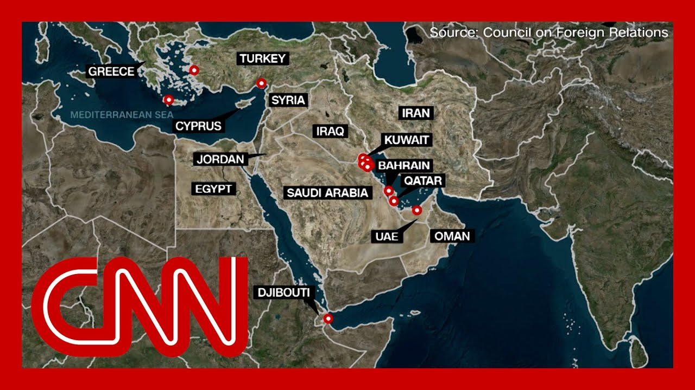

【激进组织威胁美国基地，伊朗紧张局势升级】
Summary: A militant leader warns of attacking US bases if Trump enters the war, comparing them to duck hunting grounds, while also threatening to shut the Strait of Hormuz, a critical oil chokepoint.
摘要： 一名激进组织领导人警告称，若特朗普参战将袭击美军基地，并将其比作猎鸭场，同时威胁关闭霍尔木兹海峡这一关键石油要道。

⏱️ Estimated Reading Time: 14 min
📚 六级生词 📚 雅思生词 📚 托福生词 📚 专八生词 📚 SAT生词 📚 考研生词 📚 GRE生词 📚 高考生词
American bases are targets.
美国基地成为攻击目标。
A leader from one of the most powerful Ir backed militias warning they will strike U.S. bases if Trump enters the United States into the war.
一个伊朗支持的最强大民兵组织的领导人警告称，如果特朗普让美国卷入战争，他们将袭击美军基地。
The threat American bases throughout the region will become akin to duck hunting that are hunting grounds, he say.
他称，整个地区的美军基地将变成像猎鸭场一样的猎场。
Now, of course, the US has bases across the Midd Up to 40,000 troops there.
当然，美国在中东各地设有基地，驻扎多达4万军队。
So some of those bases on the ma you see them heavily concentrated there along the Gul.
因此，部分基地集中在海湾沿岸。
The militia also threatening to shut down the Strait of Hormuz.
该民兵组织还威胁关闭霍尔木兹海峡。
Obviously, that is the most critical choke for the flow of oil in the world 21 million barrels of oil go through it every day.
显然，这是全球石油运输最关键的咽喉，每天有2100万桶石油通过。
20% of the world's supply.
占全球供应量的20%。
Now that strait has never been shut before, even in times of war.
该海峡此前从未被关闭，即使在战争时期。
And while it is obviously therefore very hard to imagine it happening, it's worth just remembering that a few week nobody would have imagined that we'd be talking about what we've been talking about for the past few days.
尽管难以想象其发生，但值得记住的是，几周前没人能料到我们会讨论过去几天的话题。
The world is on a precipice of h Trump, though, clearly wants an off ramp tonigh.
世界处于战争边缘，但特朗普今晚显然希望找到缓和途径。
Here's the white House press sec relaying a message from Trump during the press briefing today.
白宫新闻秘书今日在简报会上传达了特朗普的信息。
Based on the fact that there's a substantial chance of negotiat that may or may not take place with Iran in the near future.
基于近期可能与伊朗谈判的较大可能性。
I will make my decision whether or not to go within the next two weeks.
我将在两周内决定是否行动。
It was a direct quote she had from the president.
这是她直接引述总统的话。
Now what she said there, Caroline Leavitt was two weeks.
卡罗琳·莱维特提到的期限是两周。
And it is very important when talks about two weeks and you're counting out the days to understand what that really m.
当讨论两周期限并逐日计算时，理解其真实含义至关重要。
So we thought it was worth pointing out this.
因此我们认为有必要指出这一点。
Trump uses that exact time frame for many t.
特朗普多次使用这一确切时间框架。
I have a statement over the next two weeks on minim.
我将在两周内就最低工资发表声明。
We cut the cost of eggs in half in just a period of two weeks.
我们仅用两周就将鸡蛋成本减半。
President Trump, you know, in about two weeks, all announce it over the next tw.
特朗普总统，大约两周后，将宣布此事。
I can't tell you that, but I'll let you know in about t.
我无法透露，但会在大约两周内告知。
Within two weeks.
两周内。
Okay. Some of those things happened in two weeks and most d.
好吧，部分事情在两周内发生了，但多数没有。
But the point is he likes the ti.
关键在于他喜欢这个时间表述。
So two weeks is, well, whatever he wants it to be.
因此两周可以是任何他想要的含义。
In this case, though, when we talk about weeks, the word matters.
但在此情况下，"周"这个词很重要。
Just yesterday, Trump said that before Israel attacked Iran's nuclear sites, Iran was w from obtaining a nuclear weapon.
就在昨天，特朗普称以色列袭击伊朗核设施前，伊朗距获得核武器仅几周之遥。
I've been saying for 20 years, maybe longer, that Iran can not have a nuclear.
20年甚至更久以来，我一直说伊朗不能拥有核武器。
I've been saying it for a long t and I think they were a few week away from having one.
我长期强调这一点，并认为他们距拥有核武仅几周。
Now. Maybe he was getting that few weeks from Prime Minister Ne.
或许他是从以色列总理内塔尼亚胡处获得"几周"的说法。
but since they're using that and saying, oh, weeks away from a nuclear weapon, it is important to point out that this timeline of Iran being a few weeks away from a nuclear bomb is in direct contradiction to CNN's reporting.
但既然他们使用"几周"的说法，必须指出这与CNN报道直接矛盾。
According to U.S. intelligence assessments, Iran is three years away from being able to produce a nuclear weapon if they wanted to.
根据美国情报评估，伊朗若有意愿，仍需三年才能生产核武器。
It is also in direct contradicti to Trump's own director of intelligence, who says this.
这也与特朗普自己的情报总监说法矛盾。
The IC continues to assess that Iran is not building a nuclear weapon, and Supreme Leader Khamenei has not authoriz the nuclear weapons program that he suspended in 2003.
情报界持续评估伊朗未在制造核武器，最高领袖哈梅内伊也未批准2003年暂停的核武计划。
That's blunt. That was in March.
这是三月时的明确结论。
So the facts on Iran getting a nuclear weapon do not bear out the claim at the heart of what has put the world on the verge of world war.
因此关于伊朗获取核武的事实，无法支撑将世界推向战争边缘的核心主张。
Earlier this week, though, Trump earlier this week as if he did not care about the when he said this about his director of national intelligence.
但本周早些时候，特朗普似乎毫不在意，如此评价国家情报总监。
Right. She said they're not developing a weapon, and the supreme leader in Iran is not given the green light.
她说伊朗未在研发武器，最高领袖也未开绿灯。
Since suspending the weapons program more than 20 years ago.
自20多年前暂停武器计划以来。
So what did Trump say to that?
特朗普对此如何回应？
She said, I think they were very close to having.
他说："我认为他们已非常接近拥有核武。"
Again, the core of this entire t and peace for the world and for America comes down to whether that is true or not.
全球与美国的和平核心在于此说法是否属实。
And maybe tonight in giving Iran two weeks to talk, Trump may be showing that he does not want a repeat of a massive American war for no reason.
或许今晚给伊朗两周谈判期限，表明特朗普不想重蹈无端大规模战争的覆辙。
Facing clear evidence of peril, we cannot wait for the final pro.
面对明确危险证据，我们不能等待最终证明。
The smoking gun could come in the form of a mushroom cloud.
确凿证据可能以蘑菇云形式呈现。
Kristen Holmes is OutFront live outside the white House.
克里斯滕·霍姆斯在白宫外进行现场报道。
And, Kristen, I know you're talking to your sources there.
克里斯滕，我知道你正在联系消息源。
What is the thinking inside the white House right now on what's next?
白宫内部对下一步有何考量？
Yeah, and I do want to point to one thing because you just played that clip of George W Bush.
是的，我想强调一点，因你刚播放了小布什的片段。
One of the things that Donald Tr has spoken about a lot was that we never should have gone into t.
特朗普常强调我们本不该卷入伊拉克战争。
And he always says that people k that there were no weapons of mass destruction.
他总说人们早知道没有大规模杀伤性武器。
He has campaigned on that point.
他以此作为竞选主张。
So it is interesting now to see this comparison between t.
因此现在看到这种对比很有趣。
Carolyn Leavitt today saying that Iran had the compone to make a nuclear weapon and they just hadn't done it yet.
卡罗琳·莱维特今日称伊朗已具备制造核武的组件但尚未组装。
And that is what they were looki in terms of of course, as you sa intelligence that we saw in even testimony back in March saying that they were not just minutes away from that decision.
这与三月听证会情报矛盾，该情报称伊朗距决定尚远。
Now, when it comes to this two w there's still a lot of questions.
关于这两周期限仍有许多疑问。
Obviously, what does it actually.
显然其真实含义是什么。
Is there a decision that's going to be made in between the next two weeks?
未来两周内会做出决定吗？
And if Iran doesn't come to the table in two weeks, does that mean automatically the United States is going to be involved?
若伊朗两周内不谈判，是否意味着美国自动介入？
And what exactly will that look.
具体形式会如何？
Because we are still at a place where Donald Trump is saying that Iran can have no nuclear we.
因特朗普仍坚持伊朗不能拥有核武器。
They are not going to be able to enrich uranium.
他们不能进行铀浓缩。
And Iran doesn't seem to want to change any of what they're doing and sa.
伊朗似乎不愿改变现行做法。
we're not going to come to the t unless you're going to let us do.
除非你们允许，否则我们不会谈判。
So why two weeks?
为何是两周？
Well, I asked specifically Carolyn Leavitt, what are you seeing here?
我专门询问卡罗琳·莱维特有何依据。
Because remember, we already we, the United States already gave Iran 60 days.
因美国已给伊朗60天期限。
So what's with the two week exte.
为何又追加两周？
She said that they believe that Iran is now weaker, that because of the missile strikes, that they're going to come to th because their infrastructure is not the same.
她称美方认为伊朗因导弹袭击实力削弱，基础设施受损将迫使其谈判。
So they're going to have to make some concessions.
因此伊朗将不得不让步。
whether or not that's actually t and whether or not it's going to is something we're going to watch play out fo two weeks, as you said.
这是否属实及能否实现，将在这两周内见分晓。
But until then, we do know that the US envoy to the Middle East, Steve Wyckoff, was meeting with his UK counterp who is going to be going over to to have a conversation with his Iran counterpart, which Wyckoff will not be a part.
但此前已知美国中东特使史蒂夫·威科夫正会见英国同行，后者将与伊朗代表会谈而威科夫不参与。
We'll see if that goes anywhere into playing into this two week time frame.
这将如何影响两周期限有待观察。
Kristen, thank you so much.
克里斯滕，非常感谢。
And I want to go now to the ground in Iran where we have extremely rare acc.
现在转向伊朗现场，我们获得了极其罕见的访问权。
Our team is the first team of Western journalists to enter Iran since this latest conflict with Israel began.
我们团队是冲突爆发后首支进入伊朗的西方记者团队。
And our Fred Pleitgen tonight is OutFront in Tehran.
弗雷德·普莱特根今晚在德黑兰进行现场报道。
As Iran and Israel continue to trade salvoes of bom and missiles in Tehran, the cleanup is in full swing in residential areas that were s.
随着伊以持续交火，德黑兰居民区清理工作全面展开。
We went to several impact sites.
我们走访了多个爆炸现场。
Buildings partially collapsed in some completely destroyed in.
建筑部分坍塌或完全损毁。
The authorities here say this building was flattened in the first wave of strikes against targets in Tehran, but in other parts of Iran as we.
当局称该建筑在首波袭击中被夷平，伊朗其他地区也如此。
And they say in this site alone, six people were killed and two bodies are still buried under the rubble.
仅该地点就有6人死亡，2人仍被掩埋。
As tensions between Iran and Isr continue to escalate.
随着伊以紧张局势升级。
Many residents have left Tehran, the streets empty, some shops closed, but defiance.
许多居民离开德黑兰，街道空荡店铺关闭，但反抗情绪高涨。
Billboards across Tehran showing those killed by the Isra aerial attack and vowing revenge.
德黑兰各处广告牌展示以军空袭遇难者并誓言报复。
This one addressing Israel direc saying you have started it. We will finish it.
这块直指以色列："你们挑起，我们终结。"
As Tehran's leadership says, it won't back down, but that if the Zionist regime's hostile actions persist.
德黑兰领导层称不会退缩，但若以方持续敌对行动。
Our answers will be even more de and severe.
回应将更果断严厉。
The president says, and Iran saying the Israelis are also targeting civilian installations.
伊朗总统称以军还袭击民用设施。
Taking us to the state TV channe I rib recently bombed by two Israeli airstrikes.
带我们查看遭两次以军空袭的伊朗国家电视台。
An anchor had been reading the news as the building was hit.
主播在建筑遇袭时仍在播报新闻。
This is that studio now burned o with only a skeleton of the charred anchor desk left.
这是被烧毁的演播室，仅剩焦黑主播台骨架。
Authorities say three state TV employees were killed here.
当局称三名电视台员工在此遇难。
You can see how much heat must have been admitted by the i and by the explosion.
可见爆炸产生的高温强度。
The phones that they had here are molten here. Also the keys. Molten. The scree.
现场电话、键盘、屏幕均已熔化。
And there's actually someone's l still at their desk.
甚至有人的午餐仍留在桌上。
standing here, which probably they would have been wanting to until they had to evacuate the b.
他们可能坚守岗位至被迫撤离。
You can see there's a spoon here that's also been melted away by this explosion.
可见爆炸熔化了汤匙。
And the devastation here is massive at the Iranian state broadcaster.
伊朗国家广播机构遭巨大破坏。
Iran's leadership vows to persevere, saying it will continue to target Israe if the Israeli aerial campaign doesn't stop for, like in CNN Te.
伊朗领导层誓言坚持，称若以军空袭不停止将继续反击。